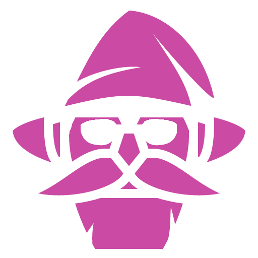

Gnome
Gnomes are the little people, generally regarded as peaceful, curious and creative.
 Character Setup
Character Setup
 Stats and Saves
Stats and Saves
Choose 2 of the following stats and increase them by 1...
- Charisma
- Intelligence
- Wisdom
- Dexterity
Or choose 1 of these and increase it by 1:
- Fortitude
As a Gnome, you have the following:
- +1 Dexterity
- +1 Charisma
You also have:
- 1 Luck
- 1 Stealth
- 1 Perception
- -1 Athletics
- -1 Intimidation
- -1 Biology
Your  Speed is 5 meters meters.
Speed is 5 meters meters.
Your starting  Health is 9.
Health is 9.
Other Things
People of your kind live for A gnome dies when overwhelmed by stress or depression and their size is If your Fortitude is 2 or more, your size is Medium. Otherwise, it's Small
 Starting Abilities
Starting Abilities
Inherited Tastes (Passive)
You don't have a sense of taste, but your eyes perceive colors sharper than other races.
Lucky (Reaction)
 Long Rest
Long Rest
After a creature within 30 meters of you makes a d20 roll, you can add or subtract your Luck Skill from that roll.
 Talents
Talents
At Level 2, choose one of the following abilities and gain it permanently:
Catch Me If You Can (0 Actions)
This turn you don't trigger attacks of oportunity.
You can do this once per Long Rest.
Also, passively, your movement speed increases by 1 meter.
Darkvision (Passive)
You can see up to 12 meters away in darkness, without discerning colors.
Oh, My Tongue! (Passive)
You now have a sense of taste. Congratulations!
You can detect whether something is poisonous by licking it without being affected by that poison.
You have 50% resistance to Acid and Poison.